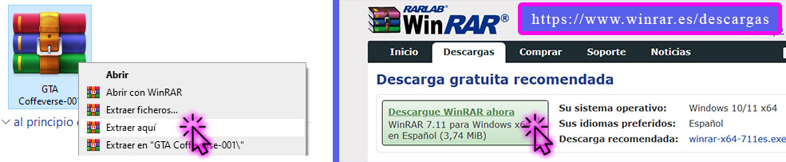
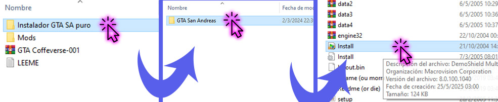
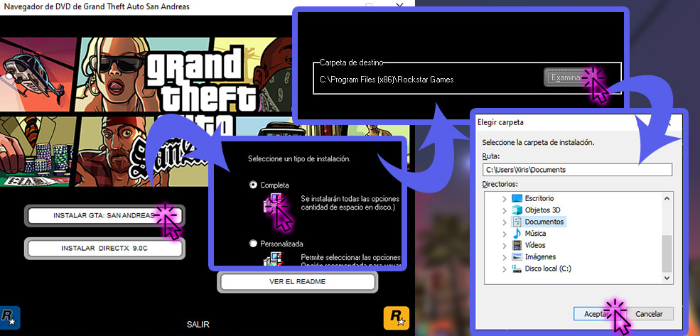
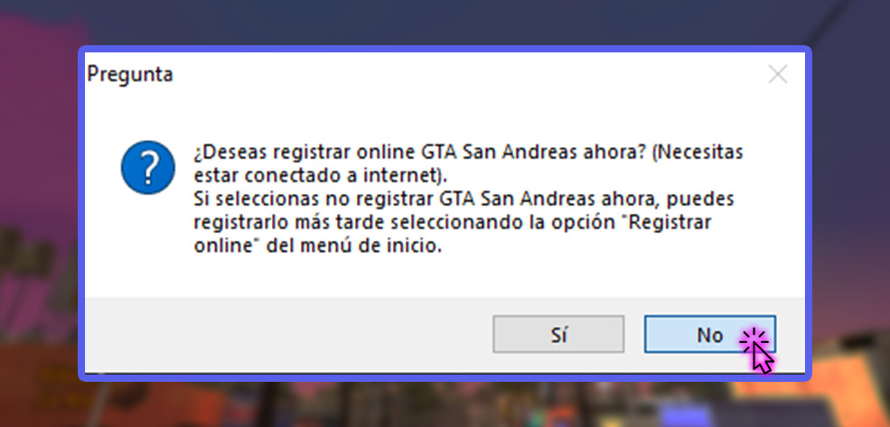
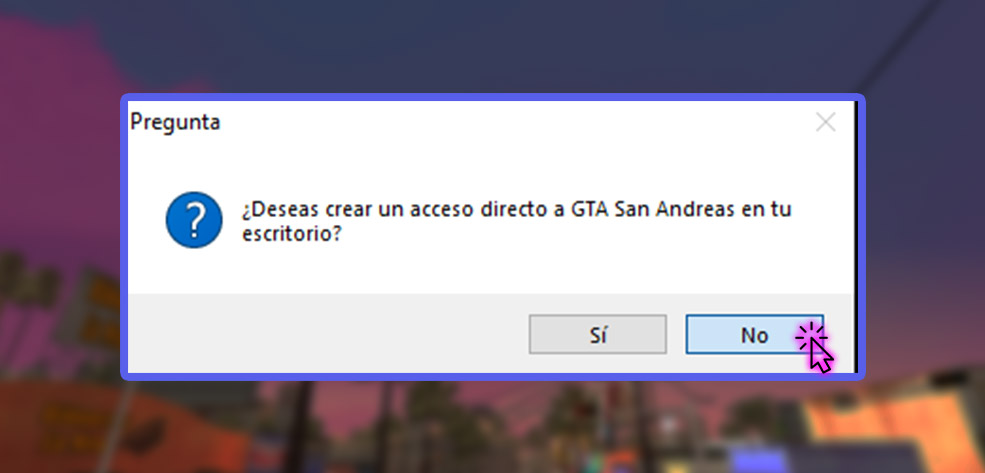
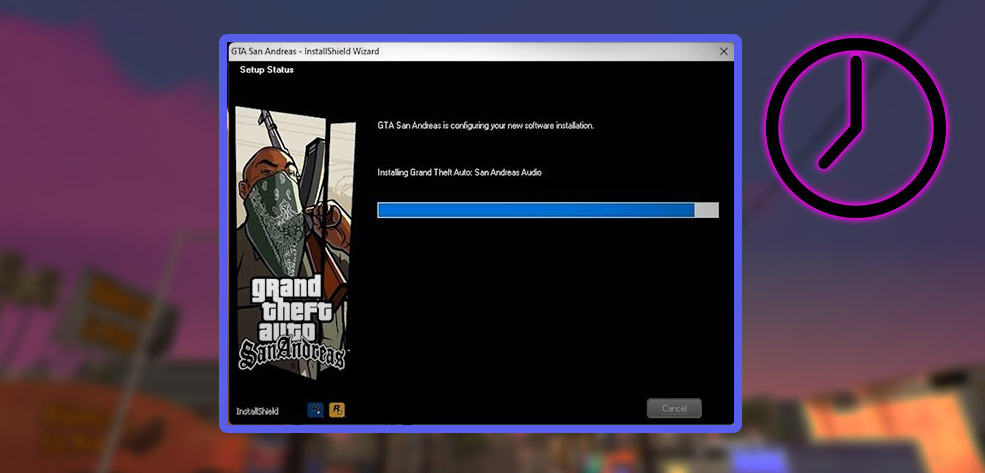
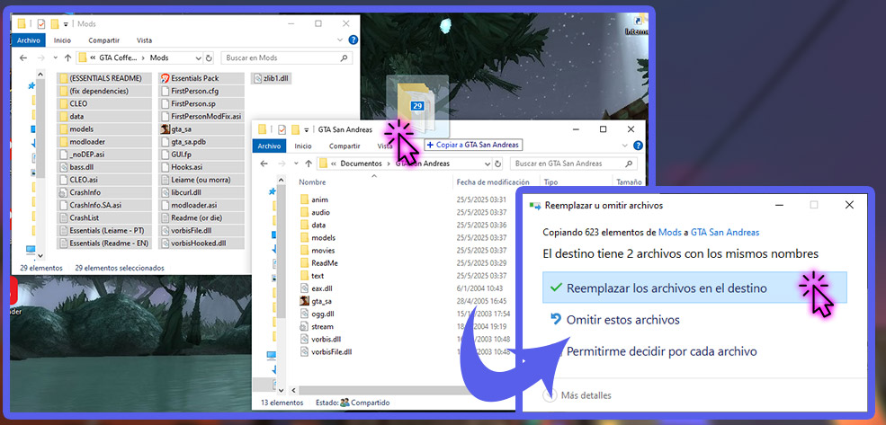
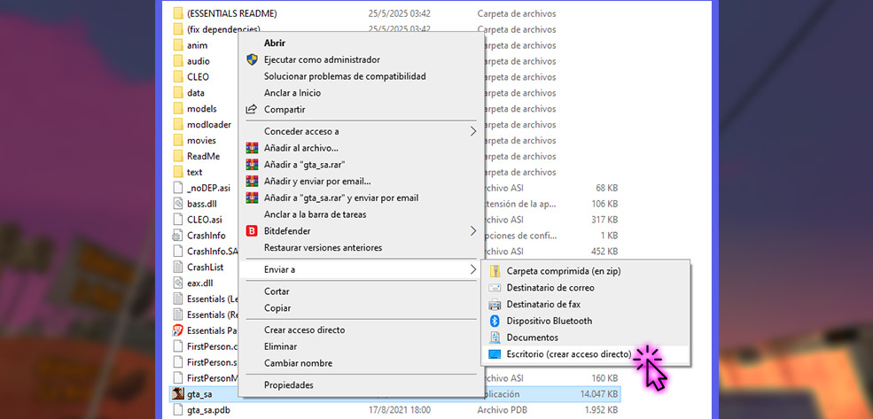

Link de descarga
A continuación, tenés disponible la descarga del juego original del GTA San Andreas junto con los
archivos del mod GTA CoffeTV. Si no te funciona la descarga por Mega, abajo hay un link alternativo de Google Drive.
Más abajo, hay una guía de instalación para el juego.
Requisitos mínimos recomendados: Sistema Operativo Windows XP en adelante, 4 GB de RAM, 10GB de espacio en disco duro.
Guía de instalación
1- Instalar el juego base:

Extraer el archivo .rar en una carpeta aparte. Si no tenés un programa para extraer archivos .rar,
podés descargarte el programa WinRAR desde su página oficial:
https://www.winrar.es/descargas. Otras alternativas para extraer archivos .rar son los programas 7-Zip, PeaZip y UnRAR.

Ir a Instalador GTA SA puro, GTA San Andreas y hacer click en "Install.exe".

Seguir los pasos. Cuando pida la carpeta en donde instalar el juego, recomiendo que se instale en la carpeta
"Documentos", NO EN ARCHIVOS DE PROGRAMA. Esto es para poder instalar los mods sin problemas.
Si te pide instalar cosas como "DirectX", aceptar e instalar, ya que eso es importante para que el
juego funcione correctamente.

Hacer click en "No" cuando pide si querés registrarte.

No crear el acceso directo todavía. Si aceptaste crear acceso directo, borralo del escritorio y después lo creás manualmente.

Seguir y esperar a que se termine de instalar.
2- Instalar los mods:

Arrastrar los contenidos de la carpeta "Mods" en la carpeta en donde se instaló el juego, que se llama GTA San Andreas, y debería
estar en la carpeta Documentos o en la carpeta en donde guardaste el juego. Aceptar y reemplazar todo lo que solicite.

Crear el acceso directo haciendo click derecho en "gta_sa.exe", Eviar a, Escritorio. Si estás usando Windows 11,
tenés que hacer click en "Mostrar más opciones" para que te aparezca la opción "Enviar a".